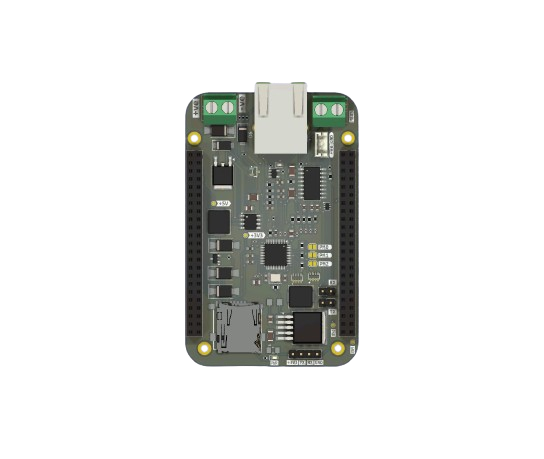

📘 S0 BaseBoard#

🔧 Features#
- Onboard W5500 Ethernet controller for wired Ethernet connectivity
- TSS721A transceiver for M-Bus communication
- Wired M-Bus connection via Screw Terminal (
J1) - SD Card slot for data logging
- Dual 2×23-pin vertical pin sockets (
J5,J6) for connecting the S0 board - 24V maximum input via Screw Terminal (
J2) - Battery input and onboard charging circuit via JST connector (
J3) - SPI and UART routed through
J5/J6to communicate with the S0 board - Protection components: diodes, inductors, capacitors for power and signal integrity
- Modular and expandable design with solder jumpers for configuration
🔌 Connector Overview#
| Reference | Type | Description |
|---|---|---|
J2 |
JST Connector | 24V DC Power Input |
J3 |
JST Connector | Battery Input and Charging |
J5 |
2×23 Pin Female Header (2.54 mm) | Main S0 interface (SPI, UART) |
J6 |
2×23 Pin Female Header (2.54 mm) | Secondary interface to S0 |
JP2 |
Solder Jumper | Config option for W5500 |
JP3 |
Solder Jumper | Config option for W5500 |
⚡ Power System#
- Primary Power Input: 24V via
J2 - Battery Backup: Via
J3with charger IC circuit - Protection: Diodes for reverse polarity, inductors for EMI
- Power Output: Supplies the connected S0 board through headers
🌐 Communication Interfaces#
- W5500 Ethernet Controller:
- Provides wired network connectivity
- Communicates with the S0 via SPI
- TSS721A Transceiver:
- M-Bus driver for utility metering
- Communicates with the S0 via UART
- Header Connections:
- All SPI and UART pins routed to
J5andJ6
🧠 Architecture#
The S0 BaseBoard serves as a cape that powers and extends the S0 module by offering:
- Ethernet via W5500
- Wired M-Bus via TSS721A
- Power management and regulation
- Standard pin headers for seamless plug-on support
📐 PCB Layout#
- 4-layer board with copper on F.Cu and B.Cu
- Board thickness: ~1.6 mm (standard FR-4)
- Modular footprint with JST and pin headers
🧩 Applications#
- Smart grid and smart metering infrastructure
- Industrial IoT gateway
- Prototyping platform for M-Bus over Ethernet
- Expansion base for S0 compute module
🔄 Interface Map to S0#
| Interface | Direction | Connected To |
|---|---|---|
| SPI | S0 ↔ W5500 | Network Comm |
| UART | S0 ↔ TSS721A | M-Bus Comm |
| Power | BaseBoard → S0 | 5V or Battery |